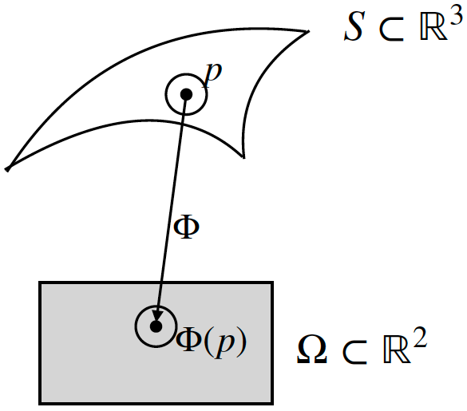
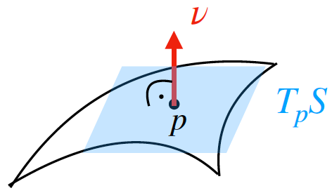
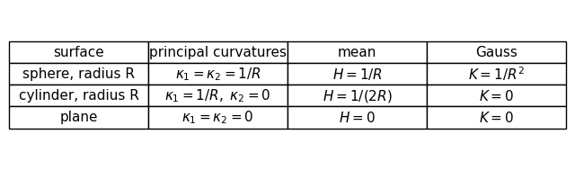
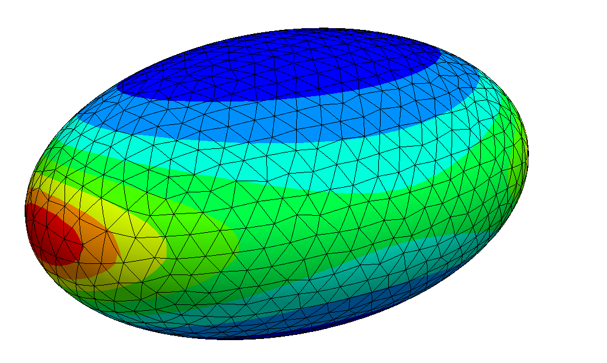
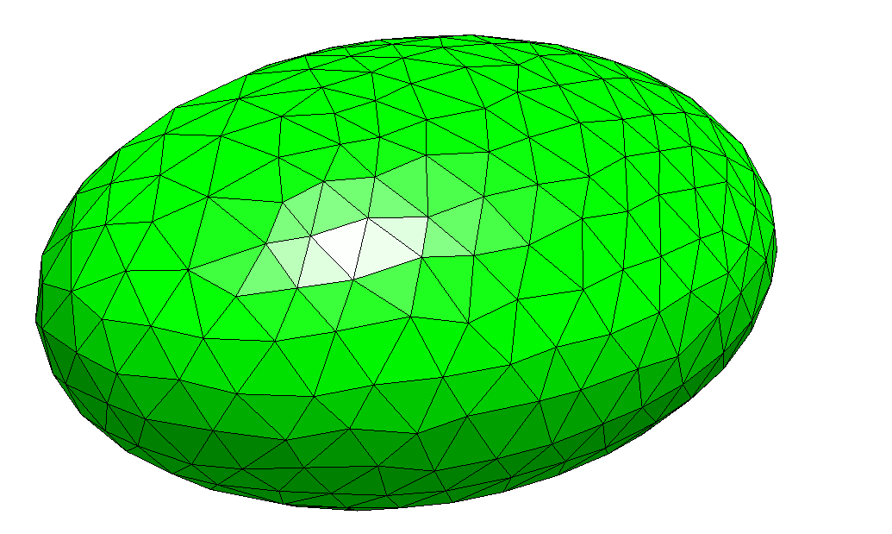
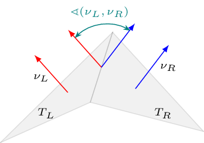
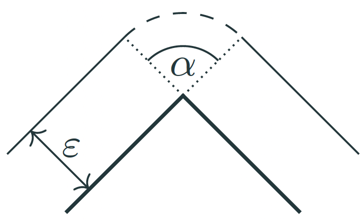
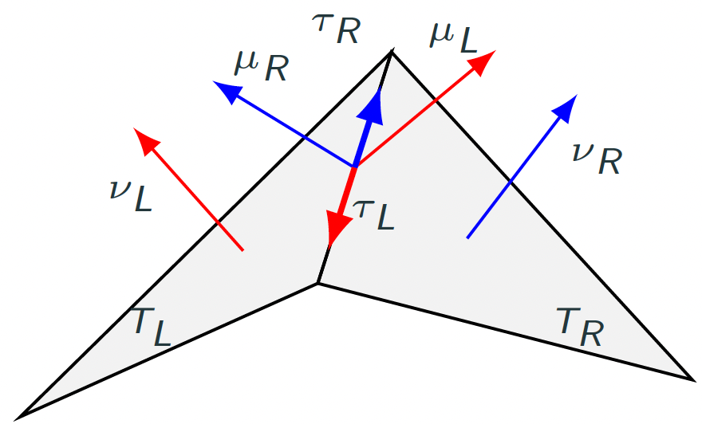
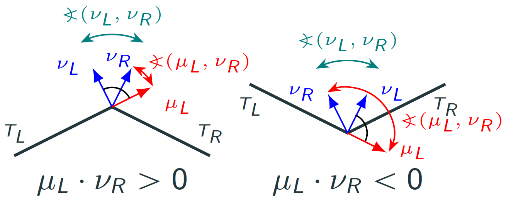

20. Extrinsic Curvature on a Triangulated Surface#
In this notebook we discuss the extrinsic curvature approximation, particularly for approximated non-smooth triangulations.
To this end, we combine two viewpoints:
Discrete differential geometry tells us that polyhedral curvature is concentrated on edges and measured by dihedral angles.
Distributional finite elements tell us how to turn these edge concentrations into a generalized curvature object that can be tested, approximated, and lifted into a finite element field.
20.1. Smooth picture: curvature is normal variation#
For a smooth oriented surface \(\mathcal S\subset\mathbb R^3\) with unit normal \(\nu\), the extrinsic shape operator is
Its two nonzero eigenvalues are the principal curvatures \(\kappa_1,\kappa_2\). From them we get
The word extrinsic matters: \(W\) sees how the surface sits in the surrounding space because it differentiates the ambient normal vector.
{kind=link}

{kind=link}

import numpy as np
import matplotlib.pyplot as plt
surfaces = [
("sphere, radius R", r"$\kappa_1=\kappa_2=1/R$", r"$H=1/R$", r"$K=1/R^2$"),
("cylinder, radius R", r"$\kappa_1=1/R,\ \kappa_2=0$", r"$H=1/(2R)$", r"$K=0$"),
("plane", r"$\kappa_1=\kappa_2=0$", r"$H=0$", r"$K=0$"),
]
fig, ax = plt.subplots(figsize=(8, 2.2))
ax.axis("off")
rows = [[name, k, h, K] for name, k, h, K in surfaces]
table = ax.table(
cellText=rows,
colLabels=["surface", "principal curvatures", "mean", "Gauss"],
loc="center",
cellLoc="center",
)
table.auto_set_font_size(False)
table.set_fontsize(11)
table.scale(1, 1.45)
plt.show()

20.2. Approximated surfaces by triangulations#
Now replace the smooth surface by a triangulated approximation. On an affine triangle \(T\), the normal \(\nu_T\) is constant, so
That is locally true, but globally misleading. Curvature has not disappeared, it has moved to the interfaces between triangles.
{kind=link}

{kind=link}

20.3. The dihedral angle#
Let two neighboring triangles \(T_L\) and \(T_R\) share an edge \(E\). Their unit normals \(\nu_L\) and \(\nu_R\) need not agree. The angle between them is called the dihedral angle and used in discrete differential geometry to approximate the extrinsic curvature, \(\sphericalangle(\nu_L,\nu_R):=\arccos(\nu_L\cdot\nu_R)\). It goes back to Steiner’s offset formula.
{kind=link}

{kind=link}

20.4. From discrete differential geometry to a weak curvature object#
A triangulated surface is naturally only piecewise smooth and globally continuous. Therefore \(\nu\) is not in \(H^1\), only in \(L^2\). Thus \(\nabla_{\mathcal S}\nu\) should not be interpreted as an ordinary pointwise derivative everywhere, not even in \(L^2\). It should be interpreted distributionally or measure-valued: integrate the elementwise curvature over elements and add concentrated edge contributions.
For a test function tensor \(\sigma\), the generalized shape operator (Weingarten tensor) has the form
{kind=link}

Here \(\mu\) is the co-normal along the edge and \(\sigma_{\mu\mu}=(\sigma\mu)\cdot\mu\) and we abbreviated \(\theta^E_{\mathrm{sgn}}=\sphericalangle_{\mathrm{sgn}}(\nu_L,\nu_R)\), where \(\sphericalangle_{\mathrm{sgn}}(\nu_L,\nu_R):= \mathrm{sgn}(\nu_R\cdot\mu_L)\sphericalangle(\nu_L,\nu_R)\) is the signed dihedral angle. It is necessary to account for the normal vector direction and to identify if a surface is curved positively or negatively.
{kind=link}

To obtain a well-defined duality pairing, we require that the co-normal co-normal component \(\sigma_{\mu\mu}\) of the test function to be single-valued over element interfaces. Further, \(\sigma\) should be symmetric and live only in the tangent space of the domain, as the Weingarten tensor has this properties. Thus, we use the Hellan-Herrmann-Johnson space mapped onto the surface
Using the co-normal co-normal component might seem ad-hoc at this moment (why not using e.g. tangential tangential components). We will see in the analysis that the generalized Weingarten tensor is highly related to the Hellan-Herrmann-Johnson method on surfaces. Further, the Weingarten tensor transforms double covariantly, which fits perfectly to be paired with the double Piola transformation of HHJ functions.
20.5. Lifting: from distribution to function field#
The generalized shape operator \(\widetilde{W}\) is a functional. Thus, we cannot directly display it on a surface. To visualize and use it in PDE systems, we compute its discrete \(L^2\)-Riesz representative in the HHJ finite element space.
For a given approximation, which is polynomially curved of order \(k\), find \(\kappa_h\in M_h^{k-1}\) such that
This is the lifted shape operator. Algebraically it is a mass-matrix solve:
20.6. Main question:#
Does the approximated curvature converge to the exact one?
Can we rigorously analyze it?